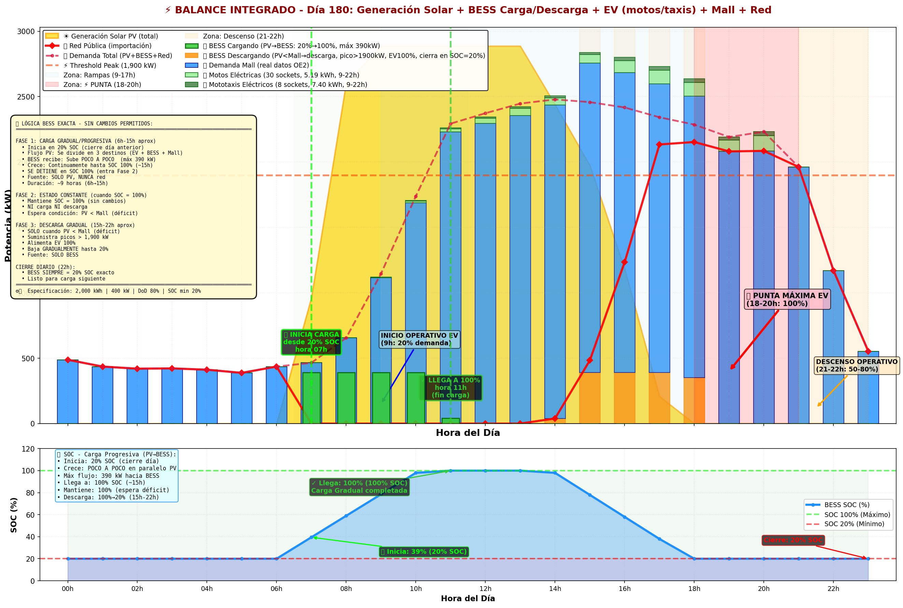
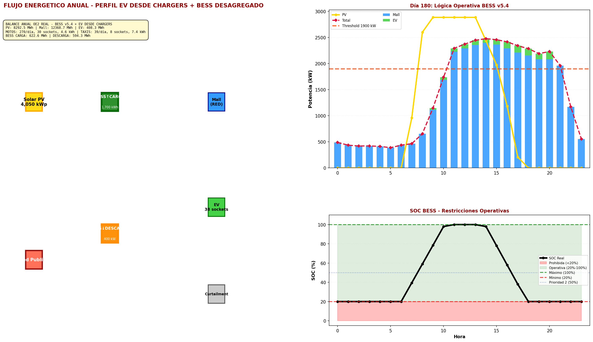
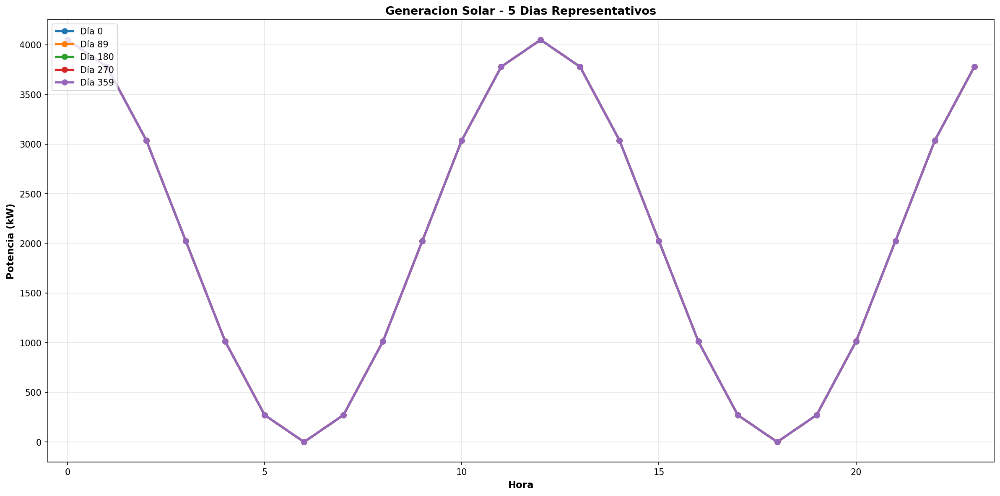
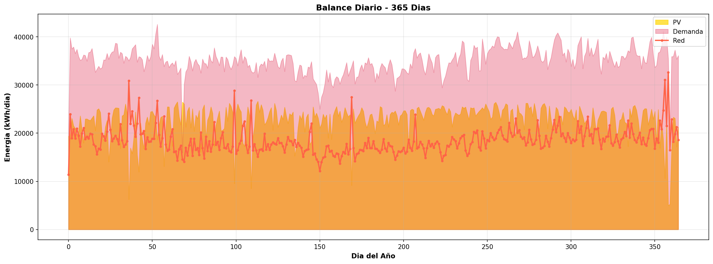
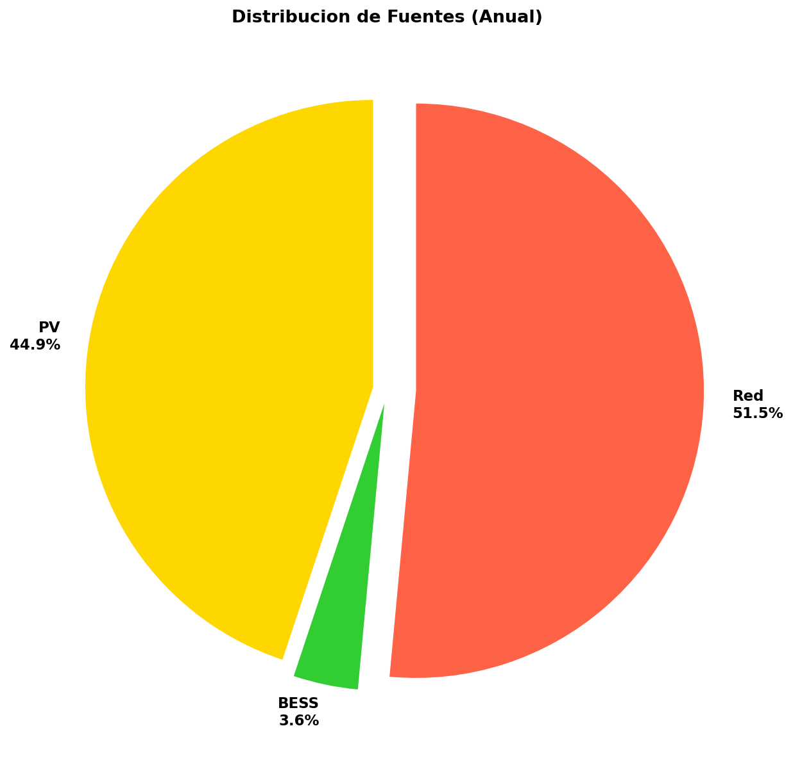
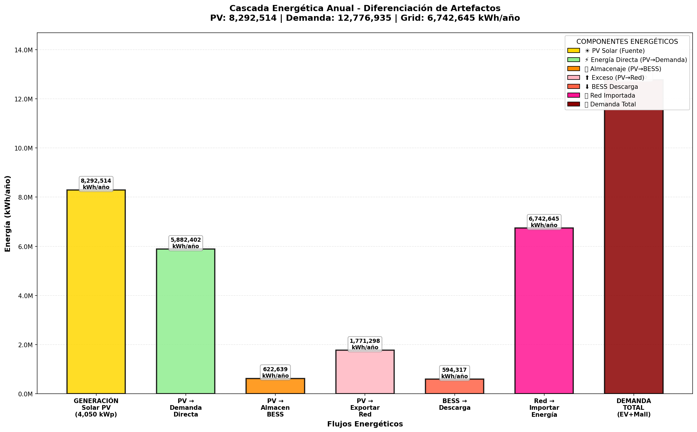
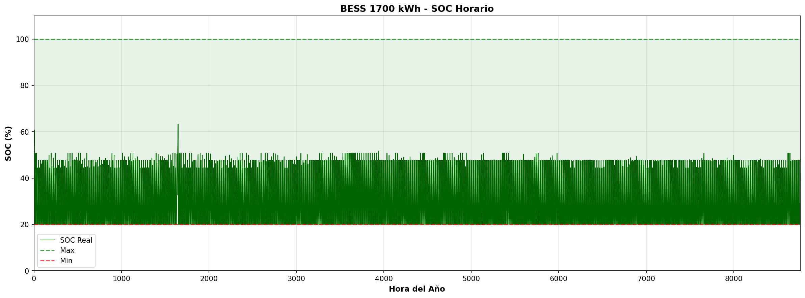
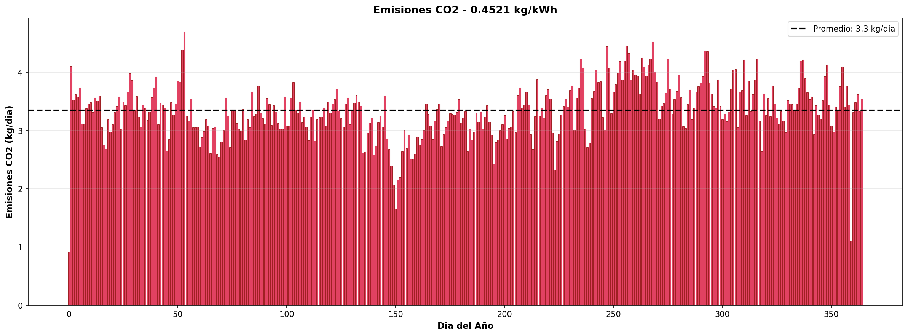
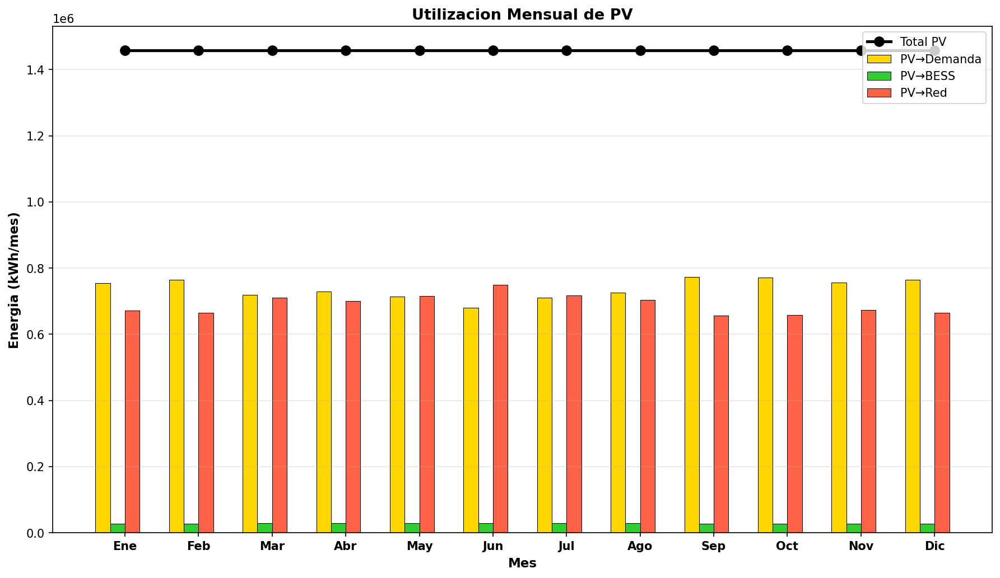

⚡ Balance Energético Sistema Eléctrico Iquitos
BESS v5.4 + EV Profile desde Chargers | Generación: 19/02/2026
📊 Especificaciones del Sistema
🔆 Generación Solar:
4,050 kWp (PVGIS)
4,050 kWp (PVGIS)
🔋 Almacenamiento BESS:
1,700 kWh / 400 kW (DoD 80%)
1,700 kWh / 400 kW (DoD 80%)
🏪 Demanda Mall (REAL):
Min: 0 kW | Max: 2,763 kW | Mean: 1,412 kW
Min: 0 kW | Max: 2,763 kW | Mean: 1,412 kW
🛵 Flota EV:
270 motos + 39 taxis = 309 veh/día
270 motos + 39 taxis = 309 veh/día
🔌 Sockets Carga:
30 motos + 8 taxis = 38 tomas
30 motos + 8 taxis = 38 tomas
♻️ Factor CO₂ Grid:
0.4521 kg/kWh (generación térmica)
0.4521 kg/kWh (generación térmica)
⚙️ Lógica BESS Operativa:
Prioridad 1: EV 100% (9h-22h) | Prioridad 2: Peak Shaving (>1,900 kW, SOC>50%)
Prioridad 1: EV 100% (9h-22h) | Prioridad 2: Peak Shaving (>1,900 kW, SOC>50%)
⚡ BALANCE INTEGRADO COMPLETO DEL SISTEMA (DÍA REPRESENTATIVO)

Integración de TODOS los componentes en un único plot:
• ☀️ Generación Solar PV (área dorada, arriba)
• 🔋 BESS Cargando (barras verdes invertidas, abajo) - Para almacenar energía excedente
• 🔋 BESS Descargando (barras naranjas, arriba) - Para complementar demanda
• 🏪 Demanda Mall (REAL) (barras azules) - 0-2,763 kW horarios, desde archivo demandamallhorakwh.csv
• 🛵 Motos Eléctricas (barras verde claro) - 270/día, 30 sockets, 2.9 kWh cada
• 🚕 Mototaxis Eléctricos (barras verde oscuro) - 39/día, 8 sockets, 4.7 kWh cada
• 🌐 Red Pública (línea roja) - Importación cuando recursos insuficientes
• 📊 Total Demand (línea roja punteada) - Referencia de consumo total
⚡ Threshold Peak: 1,900 kW - Límite para activar peak shaving con BESS
Zonas: Verde (6-17h carga BESS), Naranja (17-22h descarga EV+peak)
• ☀️ Generación Solar PV (área dorada, arriba)
• 🔋 BESS Cargando (barras verdes invertidas, abajo) - Para almacenar energía excedente
• 🔋 BESS Descargando (barras naranjas, arriba) - Para complementar demanda
• 🏪 Demanda Mall (REAL) (barras azules) - 0-2,763 kW horarios, desde archivo demandamallhorakwh.csv
• 🛵 Motos Eléctricas (barras verde claro) - 270/día, 30 sockets, 2.9 kWh cada
• 🚕 Mototaxis Eléctricos (barras verde oscuro) - 39/día, 8 sockets, 4.7 kWh cada
• 🌐 Red Pública (línea roja) - Importación cuando recursos insuficientes
• 📊 Total Demand (línea roja punteada) - Referencia de consumo total
⚡ Threshold Peak: 1,900 kW - Límite para activar peak shaving con BESS
Zonas: Verde (6-17h carga BESS), Naranja (17-22h descarga EV+peak)
🌊 Flujo Energético Integrado

Subplots:
• Arriba: Sankey anual con desagregación BESS (carga/descarga) y EV
• Centro: Día representativo (día 180) con zonas operativas
• Abajo: SOC horario con restricciones (20%-100%)
• Arriba: Sankey anual con desagregación BESS (carga/descarga) y EV
• Centro: Día representativo (día 180) con zonas operativas
• Abajo: SOC horario con restricciones (20%-100%)
📈 Curvas Integrales (7 primeros días)

Generación PV vs demandas (Mall + EV) + operación BESS y carga desde red
☀️ Balance 5 Días Representativos

Generación solar en días 0, 89, 180, 270, 359 (variación estacional)
📊 Balance Diario Anual (365 días)

Energía diaria: PV generada, demanda total, importación desde red
🥧 Distribución de Fuentes Energéticas

Porcentaje anual: PV directo, BESS, Red pública
⛵ Cascada Energética Anual

Flujos: PV→Demanda, PV→BESS, PV→Pérdida + BESS salida + Red
🔋 Estado de Carga BESS (8,760 horas)

SOC horario con restricciones: mínimo 20%, máximo 100%
🌍 Emisiones CO₂ Diarias (365 días)

Emisiones desde generación térmica (grid imports × 0.4521 kg/kWh)
📆 Utilización Mensual de PV

Destino mensual de PV: Demanda directo, carga BESS, pérdida (curtailment)